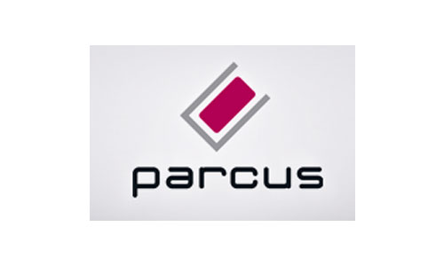

Je me présente, je m'appelle AYMANE AYYADI, J'ai 20 ans et je suis actuellement étudiant en deuxième année BTS Services Informatiques aux Organisations option Solutions d'Infrastructure, Systèmes et Réseaux (SIO SISR) à IFIDE SUP-FORMATION Alsace de Strasbourg.
Le BTS SIO (Services Informatiques aux Organisations) est un diplôme de niveau Bac+2, accessible après le baccalauréat, qui forme des techniciens spécialisés dans les métiers de l'informatique. Ce BTS s'adresse aux étudiants intéressés par les technologies numériques, la programmation, la gestion des réseaux et le développement d'applications.
Cette option forme aux métiers de l'administration et de la maintenance des systèmes et réseaux informatiques. Les étudiants développent des compétences dans l'installation, la configuration et la sécurisation des infrastructures IT.
Cette option forme aux métiers de la programmation et du développement logiciel. Les étudiants acquièrent des compétences dans la conception et le développement d'applications, de sites web et de logiciels.
Découvrez mes passions en dehors du domaine informatique
Pratique régulière du karaté depuis plusieurs années. Ce sport m'a enseigné la discipline, la persévérance et la concentration.
Passionné de jeux vidéo, particulièrement intéressé par les jeux de stratégie et les jeux de rôle. Cela développe ma réflexion stratégique.
Suivi régulier des dernières innovations en cybersécurité, intelligence artificielle et nouvelles technologies.
Découvrez mon parcours scolaire et mes expériences éducatives
Deuxième année BTS SIO option SISR
Première année BTS SIO - Fondements des systèmes et réseaux

Deuxième année - Baccalauréat Sciences Physiques
Première année - Baccalauréat Sciences Expérimentales
Découvrez mes projets personnels et professionnels

Mise en place complète de l'infrastructure informatique PARCUS : Active Directory, GPO, gestion de parc GLPI, déploiement système avec FOG, assistance à distance via RustDesk et chiffrement BitLocker.

Mise en place d'une infrastructure complète avec Active Directory, DNS, DHCP, GPO, DFS, réplication inter-site et connexion VPN IPSec entre Strasbourg et Mulhouse.

Mise en place d'un domaine Active Directory avec gestion des utilisateurs, politiques de groupe, services DNS et développement d'une application web React.
Les certifications que j'ai obtenues dans le cadre de ma formation


La veille technologique consiste à se tenir informé des nouvelles technologies et de leur évolution. Elle permet de suivre les changements dans le domaine informatique afin de mieux comprendre les outils utilisés en entreprise.
Un firewall, aussi appelé pare-feu, est un outil de sécurité informatique. Il permet de contrôler le trafic réseau entrant et sortant et de bloquer les connexions non autorisées. Il protège le réseau de l'entreprise contre les attaques.
Les firewalls ont évolué car les menaces informatiques sont de plus en plus nombreuses. Les entreprises utilisent aujourd'hui le cloud, le télétravail et Internet en permanence. Les firewalls modernes permettent une meilleure protection du réseau.
Les firewalls nouvelle génération représentent une évolution significative des pare-feux traditionnels. Ils combinent filtrage de paquets, inspection approfondie et capacités de sécurité avancées pour offrir une protection complète contre les menaces modernes.
Contrairement aux firewalls traditionnels qui se limitent au port et au protocole, les NGFW analysent le contenu des paquets, identifient les applications et surveillent le comportement des utilisateurs pour une sécurité plus intelligente et proactive.
Inspection détaillée du trafic réseau pour détecter les menaces, analyse du contenu des paquets (DPI) et contrôle applicatif.
Protection contre les cyberattaques modernes, prévention des intrusions (IPS) et filtrage basé sur les menaces.
Répond aux besoins actuels des organisations avec support du cloud, télétravail et gestion centralisée.
Les firewalls sont des composants essentiels de la sécurité informatique en entreprise. Ils protègent les actifs numériques, contrôlent les accès et préviennent les cyberattaques dans un environnement où les menaces évoluent constamment.
Contrôle du trafic entre le réseau interne et Internet, filtrage des sites malveillants et prévention des fuites de données.
Empêche l'accès aux sites dangereux et contrôle la bande passante
Configuration complexe des règles d'accès
Protection des connexions à distance via VPN, authentification multi-facteurs et segmentation réseau.
Sécurise l'accès distant aux ressources de l'entreprise
Gestion des nombreux points d'accès distants
Sécurité des informations sensibles de l'entreprise, segmentation des réseaux et protection contre les attaques ciblées.
Protection des données critiques et conformité réglementaire
Maintenance des règles de sécurité pour des données sensibles

Les entreprises adoptent de plus en plus les architectures Zero Trust Network Access (ZTNA), remplaçant les VPN traditionnels.

Les éditeurs intègrent l'IA pour détecter les attaques zero-day et les menaces avancées persistantes (APT).

Gartner prévoit une croissance de 35% du marché des Firewall as a Service en 2024.

Explication des principes Zero Trust et leur mise en œuvre avec les firewalls nouvelle génération.

Rétrospective sur 30 ans d'évolution des technologies de firewall et perspectives futures.
Pour ma veille, j'ai utilisé :
Pour les alertes de sécurité
Pour les actualités informatiques
Pour les actualités informatiques
Sources fiables reconnues
+33 7 43 34 95 47
aymane.ayyadi@hotmail.com
Après l'envoi, vous serez redirigé vers une page de confirmation Formspree.

{kind=link}